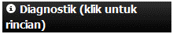

Menggunakan InaSAFE¶
Dokumen ini menjelaskan penggunaaan ‘panel dek’ InaSAFE- yang merupakan tampilan antarmuka utama untuk menjalankan skenario risiko di dalam lingkungan QGIS.
Catatan
Dalam penggunaan alat InaSAFE secara efektif, Anda seharusnya juga membaca dokumentasi Sistem Kata kunci dan Memahami Fungsi Dampak sebelum Anda memulai.
Panel dek InaSAFE merupakan cara utama untuk berinteraksi dengan alat-alat yang telah disediakan dalam InaSAFE. Setelah anda menginstal plugin InaSAFE, panel dek akan termuat secara otomatis di QGIS dan muncul di suatu tempat di layar anda. Itu akan terlihat seperti ini:
{kind=link}
Panel Dek
Anda dapat menyeret dan meletakkan panel dek untuk mengatur ulang posisinya pada antarmuka pengguna. Misalnya, Dengan menyeret panel ke margin kanan pada aplikasi QGIS akan membuat posisi dek berada pada sisi kanan layar.
{kind=link}
Dek di sebelah kanan dengan Proyek yang dimuat
Terdapat 3 area utama pada panel:
Area Pertanyaan
Area Hasil
Area the Tombol
Pada saat apa pun Anda dapat memperoleh bantuan di InaSAFE dengan mengklik pada tombol bantuan yang telah disediakan pada setiap dek dan dialog.
Area Pertanyaan¶
Tujuan dari InaSAFE adalah untuk membuat analisis dampak sangat sederhana dan mudah untuk Anda lakukan. Bagian Pertanyaan menyediakan cara yang mudah bagi Anda untuk merumuskan, apa yang Anda ingin cari? Semua pertanyaan yang ada dirumuskan dalam bentuk sebagai berikut:
Apabila terjadi [hazard] berapa banyak [exposure] yang mungkin [impact].
Sebagai contoh:
Jika terjadi banjir berapa banyak sekolah yang mungkin ditutup.
Untuk menjawab pertanyaan semacam itu, Pengembang InaSAFE telah membangun sejumlah fungsi dampak yang mencakup skenario risiko seperti banjir, tsunami, abu vulkanik, gempa dan sebagainya. Anda dapat membaca dokumentasi fungsi dampak untuk mengetahui lebih lanjut tentang Memahami Fungsi Dampak yang telah diimplementasikan.
Formulasi dari pertanyaan-pertanyaan ini akan diproses dengan memuat layer-layer yang merepresentasikan skenario baik ancaman maupun paparan di dalam QGIS.
Sebuah Ancaman (Pada kejadian) dapat dipresentasikan sebagai, contoh, sebuah layer data jenis raster pada QGIS dimana setiap pixel pada data ini mempresentasikan kedalaman banjir saat ini mengikuti genangannya.
Sebuah layer keterpaparan (berapa banyak) dapat direpresentasikan, contohnya, sebagai data vektor poligon yang mempresentasikan garis luar sebuah bangunan, atau garis luar dari data jenis raster dimana setiap pixel merepresentasikan jumlah permukiman penduduk pada sel itu.
Fungsi dampak (Mungkin) akan menggabungkan dua input layer pada model matematika dalam rangka untuk mengartikan dampak bahaya seperti apa yang mengancam sesuai data keterpaparan infrastruktur atau jumlah penduduk.
Dengan memilih kombinasi dari kotak pilihan Apabila terjadi dan Berapa banyak, aturan sesuai dengan fungsi dampak yang akan dicantumkan di kotak pilihan Yang mungkin.
Anda mungkin membayangkan bagaimana plugin InaSAFE menentukan apakah sebuah layer harus dimasukkan pada Apabila terjadi atau Berapa Banyak kotak pilihan? Plugin ini menngandalkan pada metadata kata kunci sederhana untuk berasosiasi dengan setiap layer .
Sistem kata kunci ini dijelaskan secara detil di Sistem Kata kunci. Setiap layer memiliki sebuah kata kunci yang mengalokasikan kategori ** untuk **ancaman yang akan dicatat pada pilihan Apabila terjadi . Sama halnya kategori dari keterpaparan di kata kunci untuk layer akan menghasilkan di dalam yang dicatat dibawah pilihan Berapa banyak .
InaSAFE menggunakan kombinasi kata kunci kategori, subkategori, unit, dan jenis data untuk menentukan fungsi dampak yang akan dicantumkan pada kotak pilihan Yang mungkin.
Fungsi dampak terpilih dapat diketahui (jika dapat diterapkan) dengan menekan tombol elips kecil (...) disebelah fungsi dampak yang dipilih.
Hal ini telah dijelaskan secara detil lebih lanjut pada Pengaturan Parameter Analisis
Di InaSAFE 1.2, Anda juga dapat memilih layer agregasi dari layer raster dan layer vector.
Agregasi memungkinkan Anda untuk menentukan layer tambahan ketika mendefinisikan kriteria analisis. Layer ini akan digunakan untuk memberikan rincian hasil analisis tiap daerah. Sebagai contoh jika Anda sedang melakukan analisis untuk sebuah kota, Anda dapat menggunakan wilayah kecamatan dalam kota untuk memberikan hasil per-daerah. Dengan tidak adanya layer agregasi, jangkauan analisis digunakan sebagai unit agregasi. Untuk menggunakan pilihan ini Anda perlu memuat layer data poligon sebagai dasar ke dalam QGIS yang mewakili area yang ingin Anda ringkas.
Catatan
Setelah menjalankan analisis, area pertanyaan disembunyikan untuk memaksimalkan alokasi ruang untuk area hasil (lihat di bawah). Anda dapat membukan kembali area pertanyaan kapan saja dengan menekan tombol Tampilkan form pertanyaan
Area Hasil¶
Area hasil digunakan untuk menampilkan berbagai item umpan balik yang berguna bagi pengguna. Karena skenario dampak telah dijalankan (lihat bagian selanjutnya di bawah), tabel ringkasan akan ditampilkan.
{kind=link}
Skenario yang telah diproses dengan hasil yang sudah dimuat dan ditampilkan
Jika Ana memilih layer dampak (yaitu layer yang dihasilkan menggunakan fungsi dampak InaSAFE ), pada daftar layer QGIS, ringkasan ini juga akan ditampilkan dalam area hasil.
Ketika Anda memilih layer ancaman atau keterpaparan pada daftar layer QGIS, kata kunci untuk layer tersebut akan ditampilkan dalam area Hasil, sehingga mudah untuk dipahami apakah metadata ada untuk layer tersebut.
{kind=link}
Menampilkan kata kunci untuk layer aktif
Area Hasil juga akan digunakan untuk menampilkan informasi status. Contohnya, ketika kombinasi ancaman (Apabila terjadi ), keterpaparan (Berapa banyak ) dan fungsi dampak (Apabila terjadi ) yang cocok akan dipilih, area hasil akan diperbarui untuk mengindikasi bahwa Anda dapat memproses untuk menjalankan perhitungan skenario dampak. Tombol Hitung akan diaktifkan.
{kind=link}
Mengaktifkan Tombol Hitung
Akhirnya, area Hasil juga digunakan untuk menampilkan pesan kesalahan sehingga pengguna diberitahu apa yang salah dan dimana. Anda mungkin harus menggeser sedikit di kotak pesan.
{kind=link}
Menampilkan pesan kesalahan.
Untuk mendapatkan ruang lebih untuk hasil yang tersedia pertanyaan anda akan otomatis tersembunyi untuk membuat area hasil seluas-luasnya untuk menampilkan hasil. Jika anda ingin melihat kembali pertanyaan yang anda ajukan klik pada tombol Tampilkan form pertanyaan di sebelah atas dari area hasil

Tampilkan form pertanyaan
Jika anda ingin menyembunyikan pertanyaan kembali untuk mendapatkan ruang yang lebih untuk menampilkan hasilnya lagi. Pastikan layer yang anda baru hitung dengan InaSAFE kembali aktif di daftar QGIS Layers
Catatan
Pada bagian bawah tampilan kesalahan Anda mungkin melihat tombol seperti berikut ini. Jika Anda mengklik pada tombol ini, maka akan muncul kotak yang berisi informasi diagnosis yang berguna yang dapat disampaikan sebagai bagian dari laporan bug jika Anda berpikir kesalahan tersebut adalah salah.
{kind=link}
Area Tombol¶
Tombol area berisi tiga tombol:
{kind=link}
Area Tombol
Bantuan - klik pada ini jika Anda membutuhkan bantuan konteks, seperti dokumen yang Anda baca sekarang!
Cetak... - klik pada tombol ini jika anda ingin membuat sebuah pdf dari proyek skenario dampak anda atau hanya ingin membuat sebuah laporan dan membukanya pada komposer untuk penyesuaian lebih lanjut. Sebuah lapisan dampak harus aktif sebelum tombol Cetak... dapat diaktifkan.
Hitung - jika kombinasi pilihan pada kotak combo area Pertanyaan akan memungkinkan Anda untuk menjalankan skenario, tombol ini diaktifkan.
Konversi data ketika menjalankan sebuah skenario¶
Ketika menjalankan sebuah skenario, data yang digunakan harus diproses ke dalam bentuk dimana dapat digunakan oleh fungsi dampak. Secara khusus perlu dicatat bahwa:
Remote dataset akan disalin secara lokal sebelum pengolahan.
Semua dataset akan terpotong ke perpotongan layer ancaman, layer keterpaparan dan tampilan luasan saat ini.
Semua dataset yang terpotong akan dikonversi (diproyeksi kembali) ke sistem referensi koordinat Geografi (EPSG:4326) sebelum analisis.
Pengaturan Parameter Analisis¶
Tergantung dari fungsi dampak apa yang anda pilih anda memiliki pilihan berbeda untuk menyesuaikan parameter dari pertanyaan yang anda tanyakan. Beberapa fungsi dampak memiliki beberapa pilihan konfigurasi lebih dan beberapa yang lain kurang. Selalu tergantung pada fungsi dampak itu sendiri dan pertanyaan yang ingin anda tanyakan.
Untuk membuka dialog konfigurasi fungsi dampak, anda butuh untuk klik pada tombol ... di sebelah paragraf Yang mungkin pada dek InaSAFE.
{kind=link}
Buka Konfigurasi Fungsi Dampak
Anda mungkin harus membuka 3 tab yang terlihat
Pilihan: Tergantung dari fungsi dampak yang Anda pilih, Anda dapat mempengaruhi hasil dari pertanyaan Anda disini (Fungsi Dampak) dengan mengatur nilai awal yang berbeda yang dibawakan tergantung dari fungsi yang Anda pilih (Beberapa fungsi dampak sekarang mungkin sudah dapat dipengaruhi).
Pasca pemrosesan: Mengambil hasil dari fungsi dampak dan mengkalkulasikan indikator turunan, sebagai contoh jika Anda mempunyai jumlah populasi terdampak, post-processor Gender akan memperhitungkan sesuai spesifikasi dari indikator gender seperti informasi nutrisi tambahan yang dibutuhkan untuk ibu hamil.
Kebutuhan Minimum: Jika ada sesuatu yang terjadi pada (misalnya) beberapa orang yang terkena dampak dapat diperoleh analisis kebutuhan minimumnya berdasarkan perhitungan skenario dampak. Untuk menggunakan fungsi ini Anda harus memiliki data yang diperlukan dan menghitungnya dengan menggunakan Alat kebutuhan minimum.
{kind=link}
Membuat laporan dampak¶
Ketika analisis skenario selesai anda mungkin ingin membuat sebuah laporan. Biasanya tombol Cetak... akan diaktifkan setelah analisis. Jika masih belum aktif, pilih lapisan dampak pada daftar lapisan QGIS.
Untuk mulai membuat laporan anda perlu mengklik pada tombol Cetak... di area tombol. Ini akan membuka dialog Laporan dampak
{kind=link}
Pengaturan laporan dampak
Dialog memiliki tiga area utama:
Grup guilabel:Area yang akan dicetak : memperbolehkan anda untuk mengatur jangkauan tampilan laporan peta. Terdapat dua pilihan yang tersedia. Pilih Cakupan saat ini jika jangkauan tampilan hanya menggambarkan area tertentu. Cakupan analisis akan mengatur jangkauan laporan peta pada jangkauan lapisan dampak.
Grup Template yang akan digunakan : di sini anda dapat memilih template yang diinginkan untuk laporan anda. Pada kotak pilihan akan terdaftar seluruh template yang termasuk dalam plugin ditambah template berdasarkan direktori yang dapat disesuakan pengguna (lihat Pilihan untuk informasi bagaimana mengatur direktori template). Juga dimungkinkan untuk memilih template yang diinginkan dari lokasi manapun: cukup aktifkan tombol pilihan di bawah kotak pilihan dan arahkan jalur ke direktori dimana berkas template disimpan dengan menggunakan tombol ...
area tombol: terdiri dari empat tombol. Buka PDF`digunakan untuk menghasilkan laporan dan mengekspornya pada format PDF. Hasilnya berkas dapat dibuka oleh pembaca berkas PDF bawaan anda. :guilabel:`Membuka penyusun peta digunakan ketika anda perlu mengatur laporan sebelum dicetak. Artinya, laporan akan dibuka dalam komposer QGIS dan anda dapat mengedit sesuai kebutuhan.